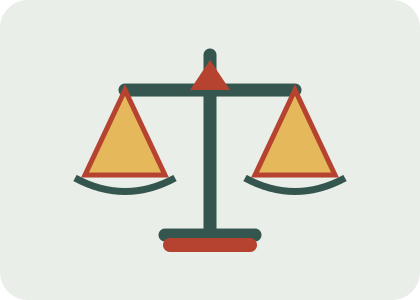

Homicidios
La tasa mundial de homicidios descendió un 14 % entre 2015 y 2024.
ODS 16 · META 16.1 Y 16.3
La violencia y las dificultades para acceder a la justicia siguen siendo desafíos mundiales.
La paz no significa solamente que no haya guerras. También implica poder vivir sin miedo, recibir un trato justo, defender nuestros derechos y confiar en instituciones que rindan cuentas. La violencia, la corrupción, la discriminación y la falta de acceso a la justicia dificultan que las sociedades sean seguras e inclusivas.
El ODS 16 incluye metas para reducir todas las formas de violencia, proteger a la infancia, garantizar el Estado de derecho y combatir la corrupción.

Datos publicados por Naciones Unidas en el seguimiento del ODS 16 de 2026.
La tasa mundial de homicidios descendió un 14 % entre 2015 y 2024.
Las muertes civiles documentadas en conflictos bajaron un 23 % en 2025 respecto a 2024, aunque siguen siendo numerosas.
Alrededor de 1.600 millones de niños y niñas sufren habitualmente castigos violentos por parte de sus cuidadores.
Fuente: ONU – Informe de los Objetivos de Desarrollo Sostenible 2026, Objetivo 16.
En mi opinión, la paz y la justicia son fundamentales para que todas las personas puedan vivir con
dignidad y tener las mismas oportunidades. Actualmente, siguen existiendo conflictos, desigualdades,
discriminación y situaciones en las que no se respetan los derechos humanos. Creo que ningún país
puede avanzar realmente si sus ciudadanos no se sienten seguros y protegidos por sus instituciones.
También considero que conseguir un mundo más justo no depende únicamente de los gobiernos,
sino que cada persona puede aportar su granito de arena respetando a los demás, rechazando la
violencia y defendiendo la igualdad. Para mí, construir una sociedad más pacífica y justa es una
responsabilidad de todos.